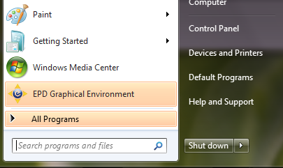

To install on Microsoft Windows download either of the following EPD 8 installers:
- epd_free-8.0-beta-win-x86.msi (140MB) - The EPD Free installer, which includes the GUI, plus 30 of the most popular Python packages. These packages are free to everyone. EPD subscribers can install additional packages from the EPD repository.
- epd-8.0-beta-win-x86.msi, epd-8.0-beta-win-x86_64.msi (350MB) - The full EPD installer includes all of EPD Free plus over 100 additional Python packages bundled into the installer. This installer is only available to EPD subscribers.
EPD subscribers may choose either installer. The EPD Free installer is smaller to download and allows subscribers to install additional Python packages, using the EPD 8 Package Manager or the enpkg command line utility. Subscribers have full access to the EPD Python Package repository. The full EPD installer is provided as a convenience for subscribers who wish to download the full set of packages at once.
Both the free and full installers are available in 32-bit (“x86”); the 64-bit (“x86_64”) version is only available to subscribers. On 32-bit Windows, you must use a 32-bit installer. On 64-bit Windows, you may use either, but we recommend that you use a 64-bit installer for performance reasons.
To start the installer, double-click the downloaded file. Verify that the publisher is listed as Enthought, Inc. and click Run. The first window of the install wizard should be displayed as shown below:
Read the license terms and, if you agree with them, click “I accept the terms in the License Agreement” and click Next.
Depending on your access rights on the machine the installer will present one of two displays. If you do not have administrative rights on the machine, you will see this display:
You can install EPD as a “per-user installation”, meaning that it will be stored in your own account on this machine, not accessible to other users on the machine. The exact installation directory varies depending on your version of Windows:
| Windows Version | Per-user Install Path |
|---|---|
| Windows XP | C:\Documents and Settings\<username>\LocalSettings\Apps\Enthought Python |
| Windows Vista | C:\Documents and Settings\<username>\LocalSettings\Apps\Enthought Python |
| Windows 7 | C:\Users\<username>\AppData\Apps\Enthought Python |
If you have administrative rights on the machine, you have the option to install EPD just for yourself (per-user install as above) or for everyone on the machine. If you choose to make EPD available to all users you can select where to install EPD. The default installation path is C:\Program Files\Enthought Python, except for for 32-bit EPD on 64-bit Windows, in which case the default is C:\Program Files (x86)\Enthought Python.
In both cases, the last step is to click ‘Install’ to begin the installation process. The process may take several minutes depending on your system configuration.
Once the installation process is complete, EPD 8 is ready to use. The GUI is launched by selecting EPD Graphical Environment from the Windows Start menu.
The installation process wraps up with the installation of the user Python environment, described here, the first time the GUI application is started.